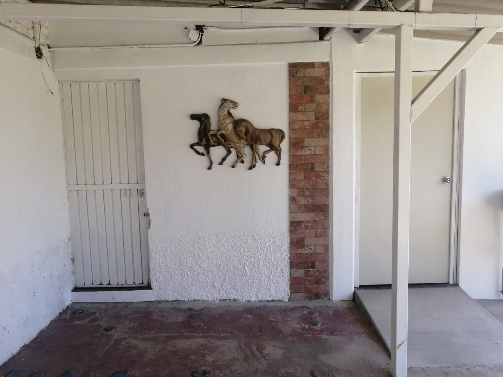
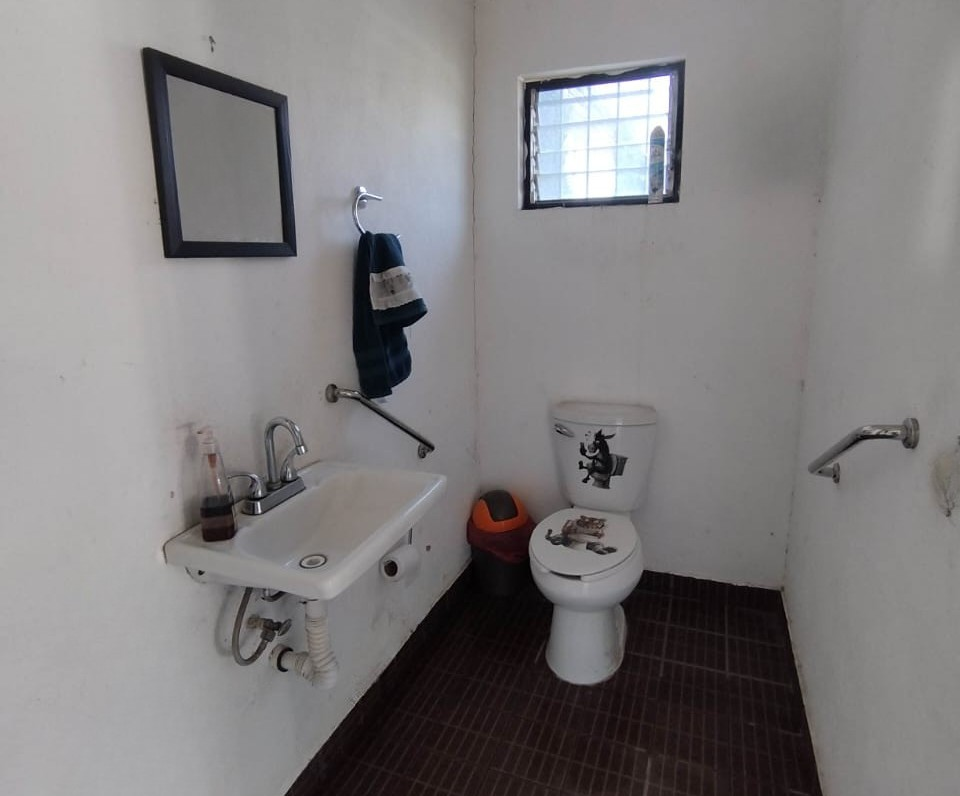
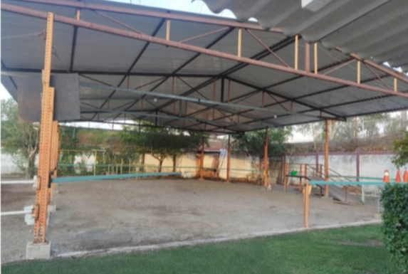
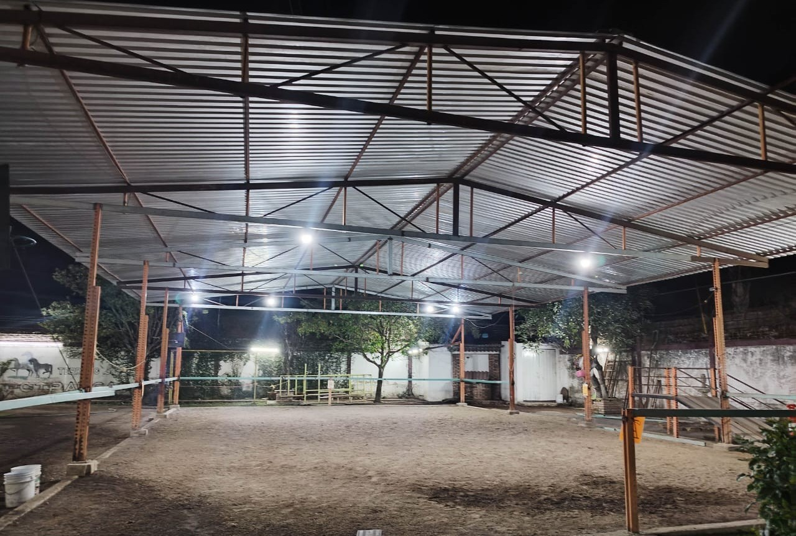
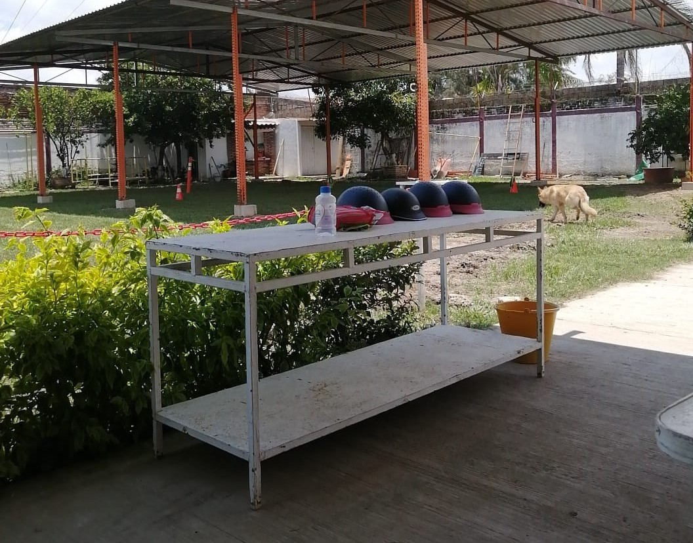
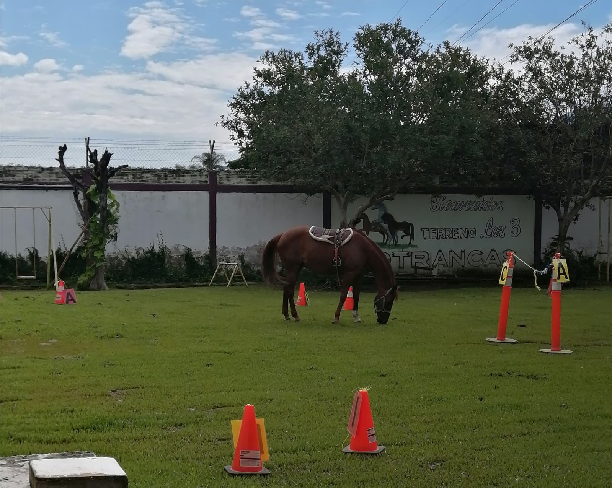
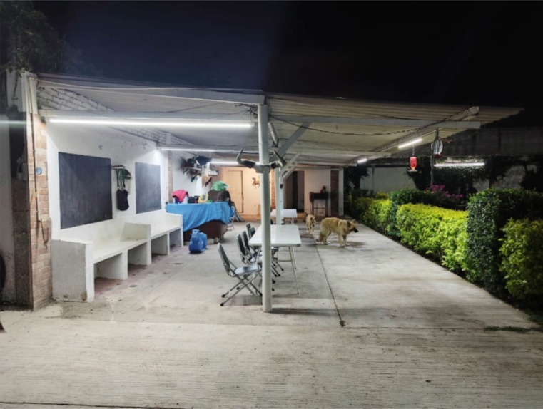
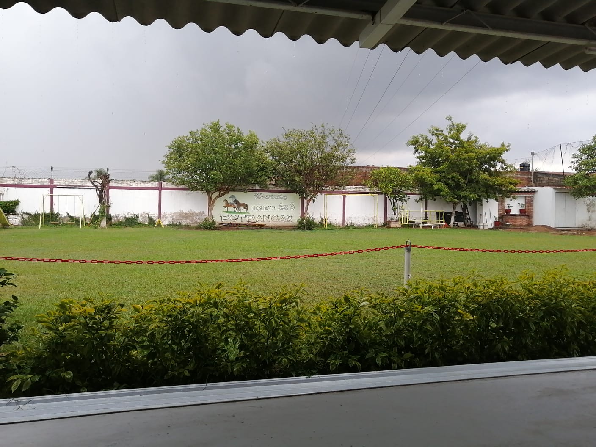
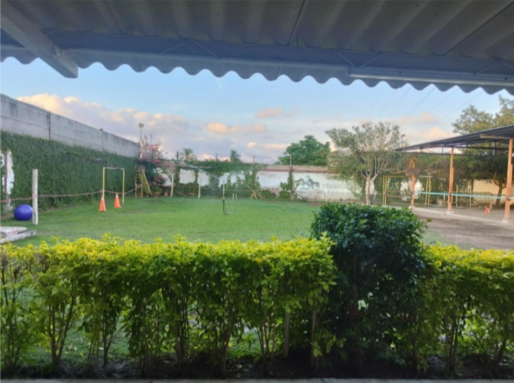

El Centro Equinoterapéutico Victoria CG está diseñado y equipado para brindar un ambiente seguro, accesible y acogedor tanto para nuestros pacientes como para sus familias. Cada espacio ha sido planeado pensando en las diferentes necesidades físicas, emocionales y recreativas de quienes nos visitan.
Desde la entrada, contamos con una puerta amplia que permite el acceso de cualquier tipo de vehículo en caso de ser necesario. Sabemos lo importante que es la accesibilidad, por lo que disponemos de un baño totalmente adaptado, con una rampa y barandales de apoyo que facilita el uso por parte de personas con movilidad reducida.



El área donde se llevan a cabo las terapias está techada y equipada con sistemas de iluminación, lo que nos permite trabajar cómodamente en cualquier clima o incluso al anochecer. Este espacio protegido asegura que las sesiones puedan realizarse sin interrupciones, ofreciendo a los pacientes un entorno controlado y seguro en todo momento.


Contamos con una amplia variedad de juegos didácticos y material de apoyo que se utilizan para motivar y adaptar las actividades según habilidades y objetivos de cada paciente. Estos recursos son una herramienta clave en el proceso terapéutico, ya que permiten estimular la atención, la coordinación y el desarrollo de habilidades físicas y emocionales de manera divertida y efectiva.


Además, pensando en la comodidad de las familias hemos creado un área especial para los acompañantes, donde pueden esperar de forma cómoda mientras observan el desarrollo de la terapia. En este espacio se puede disfrutar del entorno natural o simplemente compartir el momento con otros familiares.

Nuestro centro está rodeado de naturaleza, lo que permite que cada sesión de equinoterapia se lleve a cabo en un ambiente tranquilo y lleno de vida, favoreciendo la conexión entre el paciente, el caballo y su entorno. Cada rincón del Centro Equinoterapéutico Victoria CG refleja nuestro compromiso por ofrecer un servicio de calidad, donde el bienestar, la seguridad y el progreso de cada persona son siempre nuestra prioridad.

